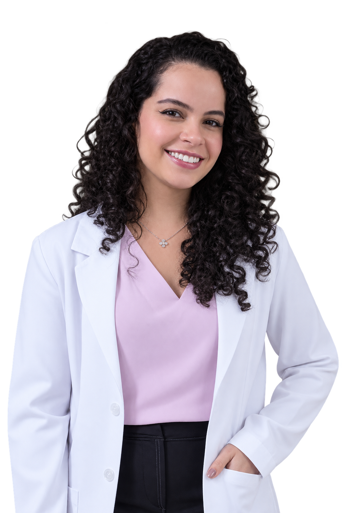

Cuidado com a sua saúde neurológica.
Atendimento neurológico individualizado, presencialmente em São Paulo e por telemedicina.

Uma consulta que começa com atenção.
Acredito em uma consulta com escuta atenta, exame físico cuidadoso e o uso de evidências científicas para a construção de um plano terapêutico cuidadoso e individualizado.
Doenças e sintomas neurológicos
Cefaleias e enxaqueca
Investigação e tratamento de dores de cabeça e diferentes tipos de cefaleia.
AVC
Acompanhamento e prevenção de novos eventos cerebrovasculares.
Epilepsia
Avaliação de crises epilépticas e acompanhamento do tratamento.
Insônia
Avaliação e tratamento das principais alterações do sono.
Alterações de memória
Investigação de queixas cognitivas e alterações de memória.
Esclerose múltipla
Diagnóstico, acompanhamento e tratamento da doença.
Entre outros sintomas neurológicos.
Trajetória profissional
Medicina
Universidade Federal da Bahia
FMB/UFBA
Neurologia
Hospital São Rafael
Salvador, BA
Neuroimunologia
Instituto de Assistência Médica ao Servidor Público Estadual
São Paulo, SP
Presencial ou onde você estiver.
Consultas presenciais em São Paulo e atendimento por telemedicina.
Agende sua consulta.
Você pode escolher o melhor horário diretamente pela agenda online ou entrar em contato para mais informações.